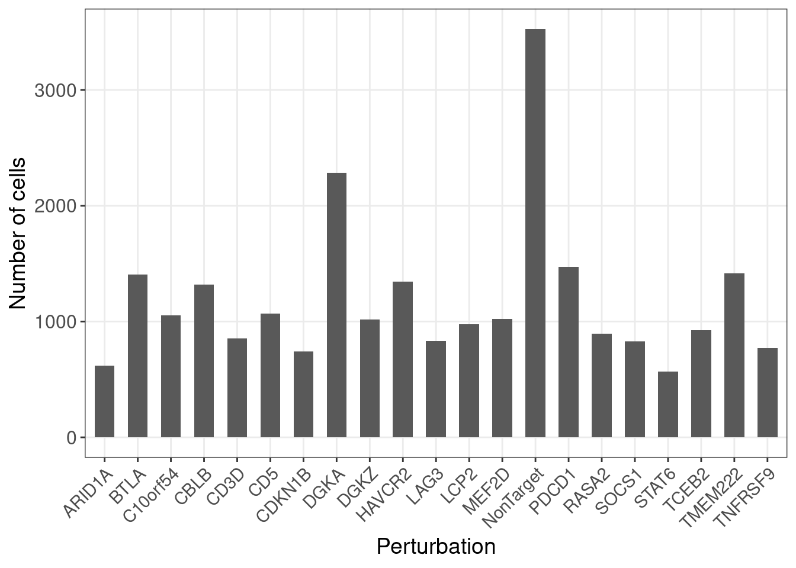

1 Introduction
This page describes the preprocessing of single-cell CRISPR screen (CROP-seq) dataset in Shifrut et al., and how to run GSFA on the processed data.
Due to the size of data, we recommend running the code in this tutorial in an R script instead of in R markdown.
1.1 Necessary packages
library(data.table)
library(tidyverse)
library(Matrix)
library(Seurat)
library(GSFA)
library(ggplot2)1.2 Original study and data source
Original CROP-seq study:
Genome-wide CRISPR Screens in Primary Human T Cells Reveal Key
Regulators of Immune Function. Cell. (2018).
Data source:
GEO accession: GSE119450,
GSE119450_RAW.tar file.
The study targeted 20 genes, including 12 genes that were identified to regulate T cell proliferation, and 8 known immune checkpoint genes with CRISPR knock-out in primary human CD8+ T cells. After CRISPR targeting, cells either underwent T cell receptor (TCR) stimulation or not before sequencing. The overall goal is to understand the effects of these target genes on the transcriptome and on T cell states and stimulation responses.
2 Preprocessing of CROP-seq data
2.1 Merge experimental batches
The original data came in four batches (donor 1 and 2 \(\times\) unstimulated and stimulated), each
in standard cellranger single-cell RNA-seq output format.
Below is the code to merge all batches of cells together into one
dataset.
Meanwhile, each cell is also assigned its CRISPR perturbation target
based on the gRNA readout. Although each gene was targeted by 2 gRNAs,
and 8 non-targeting gRNAs were designed as negative control, only
gene-level perturbations are assigned to cells, resulting in 21 (20
genes + negative control) perturbation groups in total.
(Each cell contains a unique gRNA, so the assignment is
straight-forward.)
## Change the following directory to where the downloaded data is:
data_dir <- "/project2/xinhe/yifan/Factor_analysis/Stimulated_T_Cells/GSE119450_RAW/"
filename_tb <-
data.frame(experiment = c("D1S", "D2S", "D1N", "D2N"),
prefix = c("GSM3375488_D1S", "GSM3375490_D2S",
"GSM3375487_D1N", "GSM3375489_D2N"),
stringsAsFactors = F)
seurat_lst <- list()
guide_lst <- list()
for (i in 1:4){
experiment <- filename_tb$experiment[i]
prefix <- filename_tb$prefix[i]
cat(paste0("Loading data of ", experiment, " ..."))
cat("\n\n")
feature.names <- data.frame(fread(paste0(data_dir, experiment, "/genes.tsv"),
header = FALSE), stringsAsFactors = FALSE)
barcode.names <- data.frame(fread(paste0(data_dir, experiment, "/barcodes.tsv"),
header = FALSE), stringsAsFactors = FALSE)
barcode.names$V2 <- sapply(strsplit(barcode.names$V1, split = "-"),
function(x){x[1]})
# Load the gene count matrix (gene x cell) and annotate the dimension names:
dm <- readMM(file = paste0(data_dir, experiment, "/matrix.mtx"))
rownames(dm) <- feature.names$V1
colnames(dm) <- barcode.names$V2
# Load the meta data of cells:
metadata <- data.frame(fread(paste0(data_dir, experiment, "/",
prefix, "_CellBC_sgRNA.csv.gz"),
header = T, sep = ','), check.names = F)
metadata$gene_target <- sapply(strsplit(metadata$gRNA.ID, split = "[.]"),
function(x){x[3]})
metadata$guide <- sapply(strsplit(metadata$gRNA.ID, split = "[.]"),
function(x){paste0(x[2], ".", x[3])})
metadata <- metadata %>% filter(Cell.BC %in% barcode.names$V2)
targets <- unique(metadata$gene_target)
targets <- targets[order(targets)]
# Make a cell by perturbation matrix:
guide_mat <- data.frame(matrix(nrow = nrow(metadata),
ncol = length(targets)))
rownames(guide_mat) <- metadata$Cell.BC
colnames(guide_mat) <- targets
for (m in targets){
guide_mat[[m]] <- (metadata$gene_target == m) * 1
}
guide_lst[[experiment]] <- guide_mat
# Only keep cells with gRNA info:
dm.cells_w_gRNA <- dm[, metadata$Cell.BC]
cat("Dimensions of final gene expression matrix: ")
cat(dim(dm.cells_w_gRNA))
cat("\n\n")
dm.seurat <- CreateSeuratObject(dm.cells_w_gRNA, project = paste0("TCells_", experiment))
dm.seurat <- AddMetaData(dm.seurat, metadata = guide_mat)
seurat_lst[[experiment]] <- dm.seurat
}Loading data of D1S …
Dimensions of final gene expression matrix: 33694 6953
Loading data of D2S …
Dimensions of final gene expression matrix: 33694 7461
Loading data of D1N …
Dimensions of final gene expression matrix: 33694 5535
Loading data of D2N …
Dimensions of final gene expression matrix: 33694 5145
combined_obj <- merge(seurat_lst[[1]],
c(seurat_lst[[2]], seurat_lst[[3]], seurat_lst[[4]]),
add.cell.ids = filename_tb$experiment,
project = "T_cells_all_merged")Dimensions of the merged gene expression matrix:
paste0("Genes: ", dim(combined_obj)[1])
paste0("Cells: ", dim(combined_obj)[2])[1] "Genes: 33694"
[1] "Cells: 25094"2.2 Quality control
Next, Seurat is used to filter cells that contain < 500 expressed genes or more than 10% of total read counts from mitochondria genes.
The violin plots show the distributions of unique UMI count, library size, and mitochondria gene percentage in cells from each batch.
MT_genes <- feature.names %>% filter(startsWith(V2, "MT-")) %>% pull(V1)
combined_obj[['percent_mt']] <- PercentageFeatureSet(combined_obj,
features = MT_genes)
combined_obj <- subset(combined_obj,
subset = percent_mt < 10 & nFeature_RNA > 500)
VlnPlot(combined_obj,
features = c('nFeature_RNA', 'nCount_RNA', 'percent_mt'),
pt.size = 0)
Dimensions of the merged gene expression matrix after QC:
paste0("Genes: ", dim(combined_obj)[1])
paste0("Cells: ", dim(combined_obj)[2])[1] "Genes: 33694"
[1] "Cells: 24955"| status | number | description |
|---|---|---|
| TCells_D1N | 5533 | donor1 unstimulated |
| TCells_D1S | 6843 | donor1 stimulated |
| TCells_D2N | 5144 | donor2 unstimulated |
| TCells_D2S | 7435 | donor2 stimulated |
2.3 Deviance residual transformation
To accommodate the application of GSFA, we adopt the transformation proposed in Townes et al., and convert the scRNA-seq count data into deviance residuals, a continuous quantity analogous to z-scores that approximately follows a normal distribution.
The deviance residual transformation overcomes some problems of the commonly used log transformation of read counts, and has been shown to improve downstream analyses, such as feature selection and clustering.
In the following, we used the
deviance_residual_transform function in GSFA
to perform the tranformation.
Due to the size of the data, this process can take up to 1.1
hours, and should preferably be run in an R script
separately.
dev_res <- deviance_residual_transform(t(as.matrix(combined_obj@assays$RNA@counts)))2.4 Feature selection
Genes with constant expression across cells are not informative and will have a deviance of 0, while genes that vary across cells in expression will have a larger deviance.
Therefore, one can pick the genes with high deviance as an alternative to selecting highly variable genes, with the advantage that the selection is not sensitive to normalization.
Here we select the top 6000 genes ranked by deviance statistics, and downsize the gene expression matrix.
top_gene_index <- select_top_devres_genes(dev_res, num_top_genes = 6000)
dev_res_filtered <- dev_res[, top_gene_index]2.5 Covariate removal
We further regress out the differences in unique UMI count, library size, and percentage of mitochondrial gene expression. As in the original study, we choose not to correct for donor batch or stimulation status as they contain genuine biological differences.
covariate_df <- data.frame(lib_size = combined_obj$nCount_RNA,
umi_count = combined_obj$nFeature_RNA,
percent_mt = combined_obj$percent_mt)
dev_res_corrected <- covariate_removal(dev_res_filtered, covariate_df)
scaled.gene_exp <- scale(dev_res_corrected)2.6 Inputs for GSFA
The corrected and scaled gene expression matrix (24955 cells by 6000
genes) will be used as input for GSFA input argument Y. We
annonate this matrix with cell and gene names so we can keep track.
sample_names <- colnames(combined_obj@assays$RNA@counts)
gene_names <- rownames(combined_obj@assays$RNA@counts)
rownames(scaled.gene_exp) <- sample_names
colnames(scaled.gene_exp) <- gene_names[top_gene_index]In addition, we have a cell by perturbation matrix containing
gene-level perturbation conditions across cells for GSFA input argument
G:
G_mat <- combined_obj@meta.data[, 4:24]
G_mat <- as.matrix(G_mat)Here is the number of cells under each gene-level perturbation:
num_cells <- colSums(G_mat)
num_cells_df <- data.frame(locus = names(num_cells),
count = num_cells)
ggplot(data = num_cells_df, aes(x=locus, y=count)) +
geom_bar(stat = "identity", width = 0.6) +
labs(x = "Perturbation",
y = "Number of cells") +
theme_bw() +
theme(axis.text.x = element_text(angle = 45, hjust = 1, size =11),
axis.text = element_text(size = 12),
axis.title = element_text(size = 14),
panel.grid.minor = element_blank())
Last but not least, since we hypothesize that perturbations may have different effects in stimulated and unstimulated cells, we would like to apply our modified two-group GSFA model on the data, so that the perturbation effects can be estimated for cells under different stimulation conditions separately.
Hence, we also need the cell group information as GSFA input argument
group Here we assign all unstimulated cells to group 0, and
all stimulated cells to group 1.
# Cell group info:
sample_group <- combined_obj$orig.ident
sample_group <- (sample_group %in% c("TCells_D1S", "TCells_D2S")) * 1The number of cells in each group:
table(sample_group)sample_group
0 1
10677 14278 3 GSFA
Now that we have all the inputs we need
(scaled.gene_exp, G_mat,
sample_group), we can perform GSFA (guided sparse factor
analysis) on the data.
We use the modified GSFA model with two cell groups (implemented in
fit_gsfa_multivar_2groups()), stratifying all cells by
their stimulation states (unstimulated:0, stimulated:1). We specify 20
factors initialized from truncated SVD and run Gibbs sampling for 4000
iterations in total, with the posterior mean estimates computed over the
last 1000 iterations of samples.
(Due to the size of data, this was performed in two segments, each
with 2000 Gibbs sampling iterations. More options for running GSFA are
available in the R/run_gsfa_TCells_2groups.R script.)
This process is both time and memory intensive, and should be run in an R script separately, preferably on a high performance computing cluster that can guarantee 50GB memory and 6 (typically ~5.5) hours of runtime without interruption for each segment of run.
# First segment of run (2k iterations):
set.seed(92629)
fit0 <- fit_gsfa_multivar_2groups(Y = scaled.gene_exp, G = G_mat,
group = sample_group, K = 20,
prior_type = "mixture_normal",
init.method = "svd",
niter = 2000, used_niter = 1000,
verbose = T, return_samples = T)# Second segment of run (2k iterations):
set.seed(92629)
fit <- fit_gsfa_multivar_2groups(Y = scaled.gene_exp, G = G_mat,
group = sample_group, fit0 = fit0,
prior_type = "mixture_normal",
init.method = "svd",
niter = 2000, used_niter = 1000,
verbose = T, return_samples = T)4 Session information
sessionInfo()R version 4.2.0 (2022-04-22)
Platform: x86_64-pc-linux-gnu (64-bit)
Running under: CentOS Linux 7 (Core)
Matrix products: default
BLAS/LAPACK: /software/openblas-0.3.13-el7-x86_64/lib/libopenblas_haswellp-r0.3.13.so
locale:
[1] LC_CTYPE=en_US.UTF-8 LC_NUMERIC=C LC_TIME=C
[4] LC_COLLATE=C LC_MONETARY=C LC_MESSAGES=C
[7] LC_PAPER=C LC_NAME=C LC_ADDRESS=C
[10] LC_TELEPHONE=C LC_MEASUREMENT=C LC_IDENTIFICATION=C
attached base packages:
[1] stats graphics grDevices utils datasets methods base
other attached packages:
[1] GSFA_0.2.8 SeuratObject_4.1.3 Seurat_4.3.0 Matrix_1.5-3
[5] forcats_1.0.0 stringr_1.5.0 dplyr_1.1.0 purrr_1.0.1
[9] readr_2.1.4 tidyr_1.3.0 tibble_3.1.8 ggplot2_3.4.1
[13] tidyverse_1.3.2 data.table_1.14.6
loaded via a namespace (and not attached):
[1] readxl_1.4.2 backports_1.4.1 systemfonts_1.0.4
[4] plyr_1.8.7 igraph_1.4.0 lazyeval_0.2.2
[7] sp_1.6-0 splines_4.2.0 listenv_0.8.0
[10] scattermore_0.8 digest_0.6.31 htmltools_0.5.4
[13] fansi_1.0.4 magrittr_2.0.3 tensor_1.5
[16] googlesheets4_1.0.1 cluster_2.1.3 ROCR_1.0-11
[19] tzdb_0.3.0 globals_0.15.0 modelr_0.1.10
[22] matrixStats_0.63.0 R.utils_2.12.2 svglite_2.1.0
[25] timechange_0.2.0 spatstat.sparse_3.0-0 colorspace_2.1-0
[28] rvest_1.0.3 ggrepel_0.9.3 haven_2.5.1
[31] xfun_0.37 crayon_1.5.2 jsonlite_1.8.4
[34] progressr_0.10.0 spatstat.data_3.0-0 survival_3.3-1
[37] zoo_1.8-10 glue_1.6.2 kableExtra_1.3.4
[40] polyclip_1.10-0 gtable_0.3.1 gargle_1.3.0
[43] webshot_0.5.3 leiden_0.4.2 future.apply_1.9.0
[46] abind_1.4-5 scales_1.2.1 DBI_1.1.3
[49] spatstat.random_3.1-3 miniUI_0.1.1.1 Rcpp_1.0.10
[52] viridisLite_0.4.1 xtable_1.8-4 reticulate_1.24
[55] htmlwidgets_1.6.1 httr_1.4.4 RColorBrewer_1.1-3
[58] ellipsis_0.3.2 ica_1.0-2 farver_2.1.1
[61] R.methodsS3_1.8.2 pkgconfig_2.0.3 sass_0.4.5
[64] uwot_0.1.14 dbplyr_2.3.0 deldir_1.0-6
[67] utf8_1.2.3 labeling_0.4.2 tidyselect_1.2.0
[70] rlang_1.0.6 reshape2_1.4.4 later_1.3.0
[73] munsell_0.5.0 cellranger_1.1.0 tools_4.2.0
[76] cachem_1.0.6 cli_3.6.0 generics_0.1.3
[79] broom_1.0.3 ggridges_0.5.3 evaluate_0.20
[82] fastmap_1.1.0 yaml_2.3.7 goftest_1.2-3
[85] knitr_1.42 fs_1.6.1 fitdistrplus_1.1-8
[88] pander_0.6.5 RANN_2.6.1 pbapply_1.5-0
[91] future_1.25.0 nlme_3.1-157 mime_0.12
[94] ggrastr_1.0.1 R.oo_1.25.0 xml2_1.3.3
[97] compiler_4.2.0 rstudioapi_0.14 beeswarm_0.4.0
[100] plotly_4.10.0 png_0.1-8 spatstat.utils_3.0-1
[103] reprex_2.0.2 bslib_0.4.2 stringi_1.7.12
[106] highr_0.10 lattice_0.20-45 vctrs_0.5.2
[109] pillar_1.8.1 lifecycle_1.0.3 spatstat.geom_3.0-6
[112] lmtest_0.9-40 jquerylib_0.1.4 RcppAnnoy_0.0.19
[115] cowplot_1.1.1 irlba_2.3.5 httpuv_1.6.5
[118] patchwork_1.1.1 R6_2.5.1 promises_1.2.0.1
[121] KernSmooth_2.23-20 gridExtra_2.3 vipor_0.4.5
[124] parallelly_1.34.0 codetools_0.2-18 MASS_7.3-56
[127] assertthat_0.2.1 withr_2.5.0 sctransform_0.3.5
[130] parallel_4.2.0 hms_1.1.2 grid_4.2.0
[133] rmarkdown_2.20 googledrive_2.0.0 Rtsne_0.16
[136] spatstat.explore_3.0-6 shiny_1.7.1 lubridate_1.9.2
[139] ggbeeswarm_0.7.1